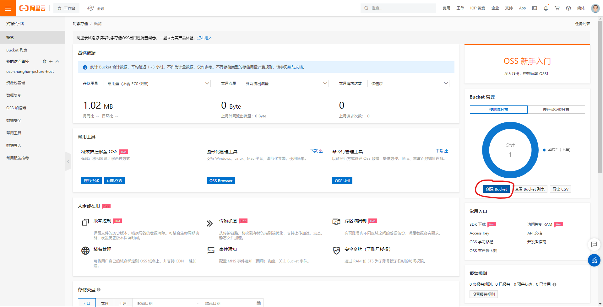

阿里云图床配置使用尝试
本文使用的操作系统为 Windows.
阿里云 OSS 购买 #
我们在阿里云上购买对象存储服务 (OSS), 并以此作为我们的图床.
-
登录阿里云. 如果没有注册的话先注册, 注册的流程这里就略过了.
-
点击 “控制台”, 找到 “对象存储 OSS”, 并开通服务.
-
点击 “概览”, 并点击 “创建 Bucket”. 按照图中示例填写好创建 Bucket 所需的信息, 其中要注意的是 “读写权限” 应为 “公共读”, “Bucket 名称” 以及 “地域” 按照自己喜好填写, 其余服务均可以选择不开启. 

-
创建完成后, 我们还要记录一下相关信息, 以便之后使用. 首先找到这个新建的 Bucket 的概览, 记下由图中红框标示的地域代号和 “外网访问 Bucket 域名”.

-
接着鼠标悬浮在右上角头像上, 点击 “AccessKey 管理”, 安全提示时点击 “开始使用子用户 AccessKey”, 或者通过其它方式进入 “RAM 访问控制”. 在 “身份管理 – 用户” 中点击 “创建用户”, 勾选 “Open API 调用访问”. 创建成功后立即记录下 AccessKey ID 和 AccessKey Secret, 要注意页面关闭后将无法再次获取信息. 最后给该用户设置 “管理对象存储服务 (OSS) 权限”. 这样在阿里云上的操作就告一段落了.


安装并配置 PicGo-Core #
PicGo-Core(文档) 是一款命令行图片上传工具, 我们以此将本地图片上传到图床上并获取访问链接.
- 下载安装 nvm for Windows.
-
安装 PicGo-Core.
npm install picgo -g # or `yarn global add picgo` -
配置 PicGo-Core 所使用的 Uploader.
picgo set uploader # configure an uploader picgo use uploader # select an uploader to use- accessKeyId: 之前记录下的用户的 “AccessKey ID”.
- accessKeySecret: 之前记录下的用户的 “AccessKey Secret”.
- bucket: 创建 Bucket 时所填写的 “Bucket 名称”.
- area: Bucket 概览中的地域代号.
- path: 设置上传的图片在云中所存储的路径, 可以设为空.
- customUrl: Bucket 概览中的 “外网访问 Bucket 域名”.
- options: 针对图片的一些后缀处理参数 PicGo 2.2.0+ PicGo-Core 1.4.0+, 我们设为空就可以了.
-
现在 PicGo-Core 已经可以使用了, 尝试一下吧!
picgo upload # upload the image in clipboard picgo upload <filename> # upload <filename> -
给 PicGo-Core 添加插件, Awesome-PicGo 中列举了现有的插件, 去挑选想用的吧. 例如我们不希望上传到图床的图片保留原来的文件名 (这样文件名容易重复, 而重复的时候旧的图片就会被覆盖), 就可以用 picgo-plugin-rename-file 插件来自动重命名图片.
picgo install picgo-plugin-rename-file # install plugin picgo set plugin # configure plugin
配置 Typora #
按照下图配置 Typora 即可完成图片拖入自动上传啦!